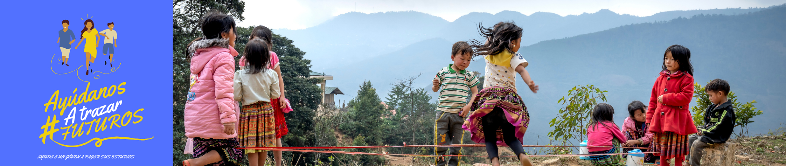

Se puede ayudar a la fundación en trabajos como: contabilidad, en lo pedagógico, psicosocial, comunicaciones y administrativas
Esto se hace a través de un acuerdo, en que se lleva a cabo un acuerdo de cuanto monto de dinero se puede donar y cada cuánto
Se puede donar útiles escolares, ropa, juguetes, alimentos no perecederos, literatura, todo en un excelente estado y también se puede donar dinero ya sea para un proyecto en específico o para necesidades de la fundación
Compartir información de los proyectos de la fundación, ya sea en la redes sociales o con contactos que nos puedan ayudar
Si bien nos conformamos legalmente en 2007, el proceso comunitario inicio desde 1998 por parte de la Comunidad de Hermanos Maristas de la Enseñanza y dos jóvenes del sector, con el fin de acompañar pedagógicamente a niños y niñas desescolarizados en el sector La Torre, del barrio Santo Domingo Savio II, que para esa época se constituía por invasión con población desplazada de Urabá y Chocó, por medio de un escenario de encuentro y trabajo llamado la “Escuelita de Tablas”, que consistía en una improvisada caseta de madera con techo de zinc y piso de tierra, en la que los niños y las niñas compartían sus aprendizajes en torno a la lectura y las competencias matemáticas. Luego de dos años y medio, y cinco etapas de construcción de acuerdo a la disponibilidad de recursos gestionados por los Hermanos Maristas, en el 2006 y gracias al premio del Concurso de Mujeres Jóvenes Talento que otorgó la Alcaldía de Medellín en 2004 a Lenis Araque, y el apoyo de algunas entidades como SED España y el Fondo de Empleados de EPM se logró culminar la construcción del centro Comunitario La Torre.
Ante una estru ctura física como el centro comunitario y los servicios y proyectos que permitió gestar y desarrollar, en 2007 formalizamos la creación legal de la Fundación Huellas como una respuesta de los voluntarios y voluntarias a la realidad y necesidades del sector y como una forma de garantizar mayor presencia y sostenibilidad en el tiempo. Desde el año 2010 la presencia se extendió en la Vereda Granizal del Municipio de Bello. Actualmente es la fuerza del voluntariado la que constituye la sostenibilidad de la organización, a lo que se suma la auto gestión de recursos y la vinculación de amigos y amigas que aporta su tiempo talento y conocimiento.